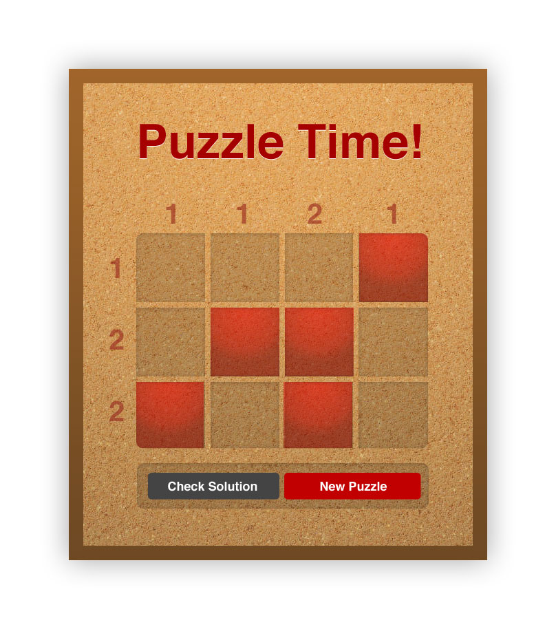

Overview
Your task is to build this game:

All the assets (pre-cut) are in
img
, please place your working app in
app.html
.
If you want to leverage
haml
,
sass
, and
coffeescript
, this project is set up for
Middleman
. Read about it at
their website
and edit the files in
source
.
Certainly feel free to complete this project using vanilla html,
css, and javascript. If you want to take that approach, edit the
files in
build
.
Puzzle
The puzzle you're building is a simple logic puzzle. You have to fill in the squares to coorespond with the hints along the top and down the side.
The hints tell you how many squares in that row or column should be filled in. For example in the sample image along the top the first number is '1', which indicates that there is one square filled in in that column. Similarly the bottom number along the left is '2', which indicates that there are two squares filled in in that row (they don't have to touch).
Interactions
- Clicking on a tile should toggle that tile on and off
- Clicking on "New Puzzle" should query the server for a new puzzle and set it up. It should clear out any existing tile selections
- Clicking on "Check Solution" should transmit the solution back to
the server to see if it's valid
- Extra credit for checking in the browser first and then transmitting to the server!
Tests
There are jasmine specs in spec.html that you need to make pass. They should give you some idea of what code you need to write as well.
Trouble
If you run into any trouble, please email me and ask me for help.
Thanks for giving this a shot, good luck!